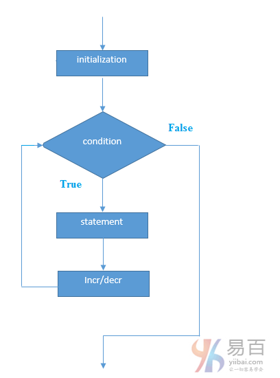

☰ 目录
12 for 循环
Java for循环用于多次迭代程序的一部分，或者多次执行同一个代码块。如果迭代次数是固定的，建议使用for循环。
java中有三种类型的for循环。如下所示 -
- 简单
for循环
for-each或增强型for循环- 标记
for循环
1. Java简单For循环
简单的for循环与C/C++相同。我们可以初始化变量，检查条件和增加/减少变量的值。
语法：
for(initialization;condition;incr/decr){
//code to be executed
}
执行流程图如下所示 -

示例：
public class ForExample {
public static void main(String[] args) {
for(int i=1;i<=10;i++){
System.out.println(i);
}
}
}
执行上面的代码，输出如下 -
1
2
3
4
5
6
7
8
9
10
2. Java for-each循环
for-each循环用于在java中遍历数组或集合。它比简单的for循环更容易使用，因为不需要递增值和使用下标符号。
语法：
for(Type var:array){
//code to be executed
}
示例：
public class ForEachExample {
public static void main(String[] args) {
int arr[] = { 12, 23, 44, 56, 78 };
for (int i : arr) {
System.out.println(i); /// 有意思的是，如果是 i + ' '; 会加上' ' 的 ASCII， 所以应该用 " "
}
}
}
执行上面的代码，得到如下结果 -
12
23
44
56
78
3. Java标记For循环
我们可以让每个for循环的名称。 为此，在for循环之前使用标签。它是有用的，如果在嵌套for循环中，可以使用break/continue指定循环。
通常，break和continue关键字断开/继续最内循环。
语法：
labelname:
for(initialization;condition;incr/decr){
//code to be executed
}
示例：
public class LabeledForExample {
public static void main(String[] args) {
aa: for (int i = 1; i <= 3; i++) {
bb: for (int j = 1; j <= 3; j++) {
if (i == 2 && j == 2) {
break aa; /// 如果是continue，则是从外层开始，重新下一轮的迭代
}
System.out.println(i + " " + j);
}
} /// 是跳出到标记块所在区域的下面。
}
}
执行上面的代码，得到如下结果 -
1 1
1 2
1 3
2 1
如果使用break bb;它将打断内循环，这是任何循环的默认行为。
public class LabeledForExample {
public static void main(String[] args) {
aa: for (int i = 1; i <= 3; i++) {
bb: for (int j = 1; j <= 3; j++) {
if (i == 2 && j == 2) {
break bb;
}
System.out.println(i + " " + j);
}
}
}
}
执行上面的代码，得到如下结果 -
1 1
1 2
1 3
2 1
3 1
3 2
3 3
4. Java无限循环
在for循环中，如果使用两个分号;，则它对于循环将是不定式的。
语法：
for(;;){
//code to be executed
}
示例：
public class ForExample {
public static void main(String[] args) {
for (;;) {
System.out.println("infinitive loop");
}
}
}
执行上面的代码，得到如下结果 -
infinitive loop
infinitive loop
infinitive loop
infinitive loop
infinitive loop
ctrl+c
提示： 在执行上面的程序时，您需要按ctrl + c退出程序。